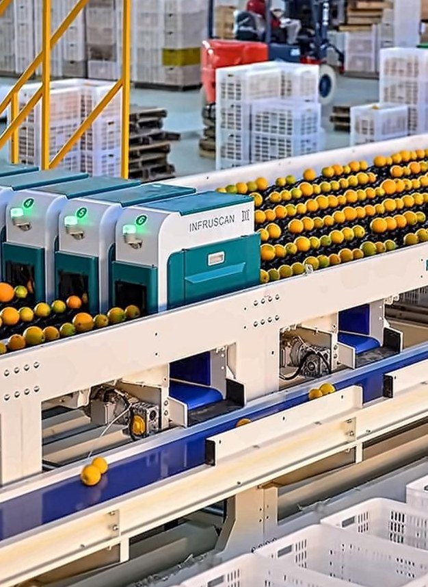

Agricultural machinery
Field, post-harvest and processing machinery under exclusive Malaysian distribution rights.
Logsco AgriTech Solutions distributes field, post-harvest and processing machinery under exclusive Malaysian rights, and supports every machine locally for life.

To be ASEAN’s most trusted gateway for smart agricultural machinery, technology and IoT, bringing world-class brands to every farm and processing centre.
To secure sole distributorships of proven international brands, support them locally for life, and digitise farms through connected IoT: first in Malaysia, then across ASEAN.
Each line has its own page: what it does, where it fits, who it’s for and the questions buyers ask.
Size, weight, colour and defect grading
The wet section: clean, wax, dry
Internal quality, weight and packing
Field and production machinery
AI-vision QC, sensors, drones, dashboards
Field machinery and IoT work on the estate. The post-harvest line takes over at the washing tank and hands packed fruit to the cold chain.
Field, post-harvest and processing machinery under exclusive Malaysian distribution rights.
Automated grading lines, AI-vision quality inspection and precision-farming tools.
Soil and climate sensors, drones and remote dashboards for data-driven estates.
Assess needs, select the right machinery and plan CPPC layouts.
Machine design and features tailored to your operation.
On-site installation by local technicians in your area.
Two months of commissioning with training at your facility.
24/7 technical support and 3–5 day spare parts.
Post-harvest fruit and vegetable sorting equipment, with 21 years of R&D partnership with the Chinese Academy of Sciences and Huazhong Agricultural University.
Est. 1988A leading Chinese agricultural machinery manufacturer and production service provider, aiming to be a one-stop centre.
Share your crop, volumes and site. A specialist will come back to you, usually within two working days.